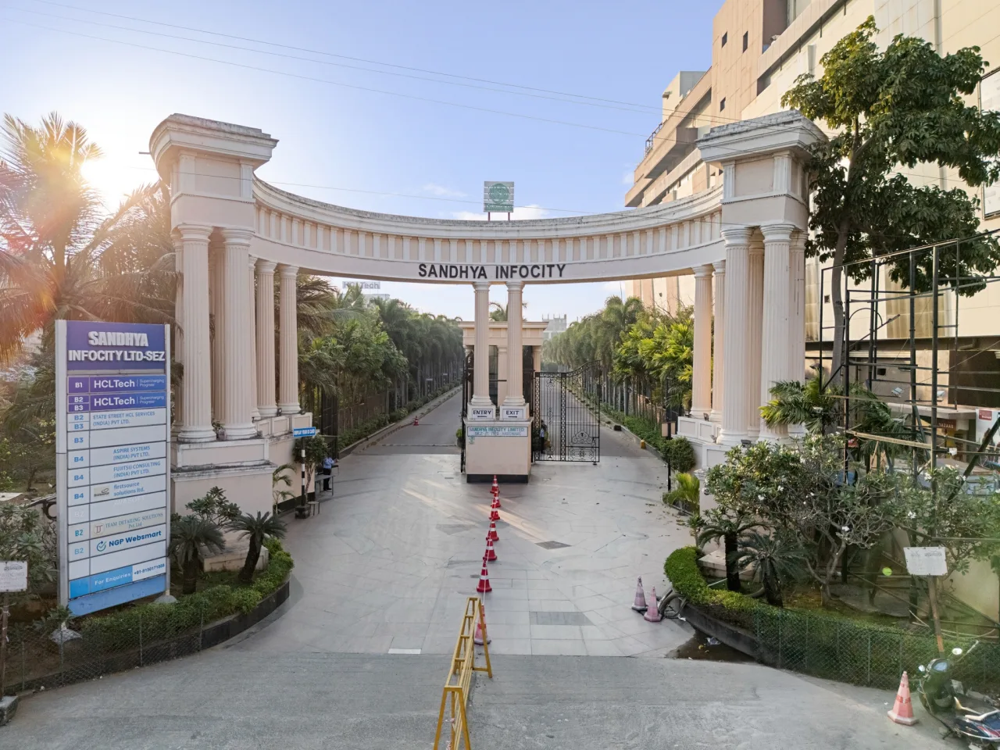

Pedestrian and Back Entrance Guide
Photographs of every approach, walking paths from the main road, and how long each one takes on foot.

Navalur · Chennai
Find the right gate and read the walking guides before you arrive.
This week on campus
A 2 km walking route runs across the campus during the HCL 50 celebration week. Route map, what to expect on the way, and emergency numbers.
Open the route guideEntrances
Gate status is kept current by the Facility Management team. Tap a gate for driving directions.
The signed entrance on Rajiv Gandhi Salai. Use this unless you have been told otherwise.
 Open
Open
Lane past the main gate, near Geetham Restaurant.
 Closed
Closed
Closed while the new paver road is laid.
Please use the Main Gate or Back Entrance 2.
Documents
Open a guide to read it here, or download the PDF to keep on your phone.
Photographs of every approach, walking paths from the main road, and how long each one takes on foot.
The approved 2 km route across the campus, with the blocks, the podium and the substation area marked.